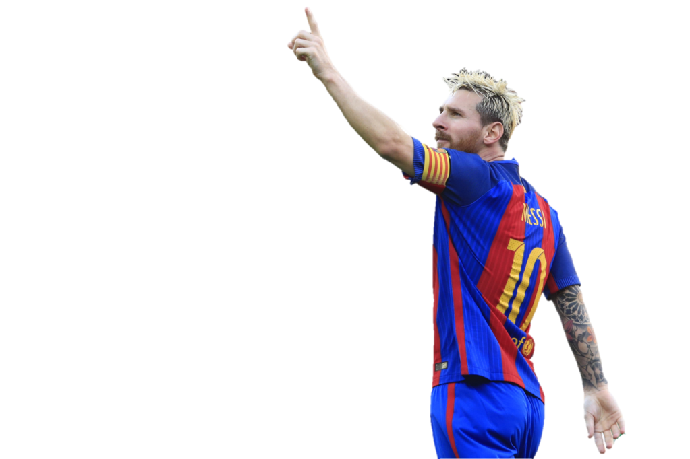
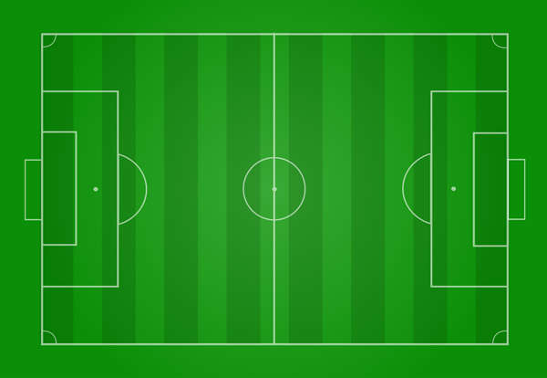
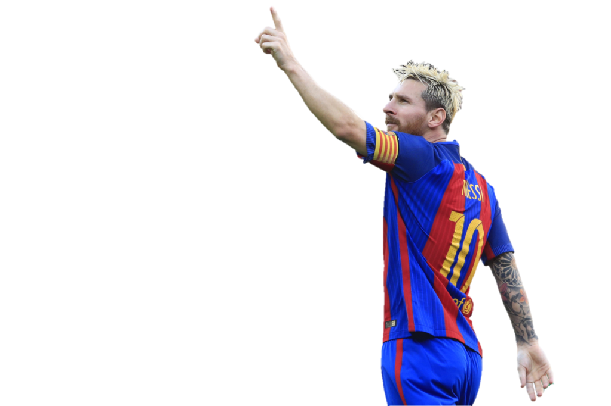
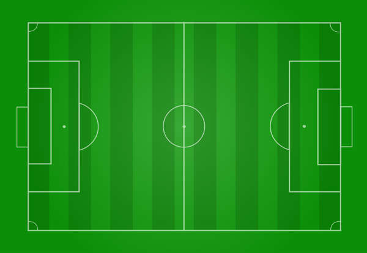
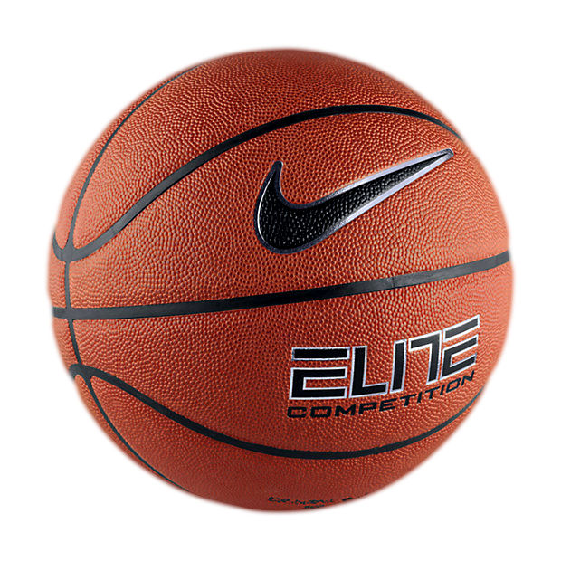
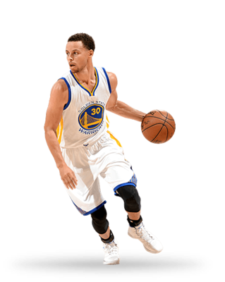
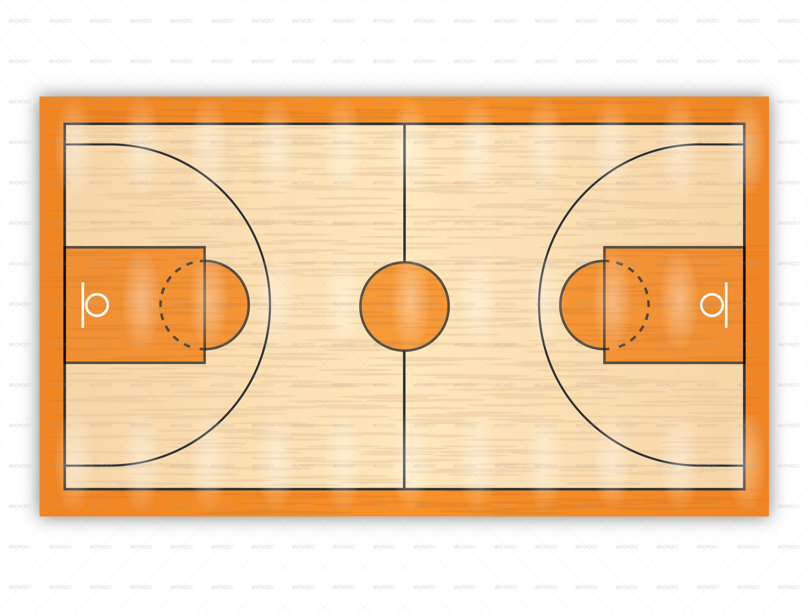
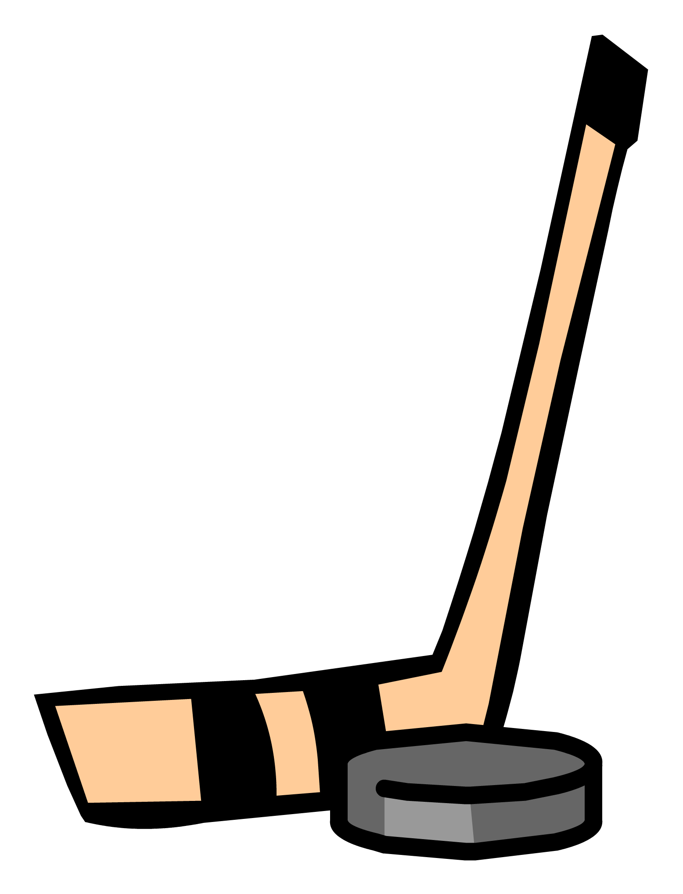
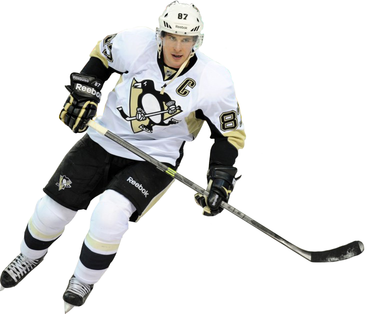
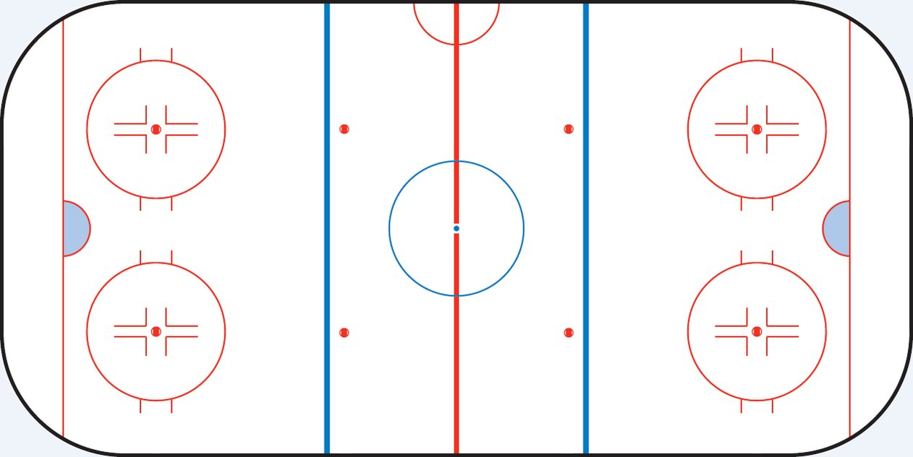

Soccer is a ball game played by two teams. It is a team game and was invented in the mid 19th century. Not to confuse it with other types of it, like American football, rugby, or Gaelic football, the official name of this sport is called association football. But in Canada, we usually just call it soccer. It is know as the most popular sport worldwide because of how easily the game can be played and the simplicity of it. The first ever soccer match was played on Barnes common at Mortlake, London on 19th December 1863 between Barnes Football Club and Richmond Football Club. There are many great soccer players in the world, such as Ronaldo, Neymar, Pele, and Beckham, but my favourite soccer player is Messi.
 



For more information, check https://en.wikipedia.org/wiki/Association_football
It is a quick, fast-paced game using the hands. It is played with a basketball, as you can see in the image and two nets. There are many types of it, but the most popular is the 5 on 5. The goal is to score as many shots into the enemy’s basket at the end of the time limit to win. This game demonstrates ball control, shooting, teamwork, and many other traits. It is the second most popular sport in the United States and is in the top five in the world. United States homes the greatest basketball players, such as Michael Jordon and Kobe Bryant.
----This is a basketball!--------------My Favourite Basketball Player---------Typical Basketball Court-----------------
  For more information, check https://en.wikipedia.org/wiki/Basketball
Ice hockey is played between two teams of skaters on a large flat area of ice, using a vulcanized rubber disc called a puck. This puck is often frozen before high-level games to decrease the amount of bouncing and friction on the ice. The game is played all over North America, Europe and to varying extents in many other countries around the world. It is the most popular sport in Canada, Finland, Latvia, the Czech Republic, and Slovakia. In Canada, it is the national sport. The objective in this game is to skate around the rink with your team and try to score in the enemy’s net usng the hockey stick. As you can see in the image, the hockey stick is the long wooden curved stick and the puck is the rubber disc beside it.
-----Hockey Stick and Puck------------My Favourite Hockey Player-----------Typical Hockey Rink----------------------
  For more information, check https://en.wikipedia.org/wiki/Ice_hockey
Many of this information is from Wikipedia
If you’re interested in video games, click here.
Return to the top of the page.